7 SPSS
Hier finden Sie Anleitungen zum Installieren und Lizenzieren von SPSS.
7.1 SPSS installieren
7.1.1 MacOS
Das Setup liegt in einer ISO-Datei verpackt. Diese befindet sich in Owncloud unter der Adresse: 0_Institut\3_EDV\spss-statistics-25.0-mac-ml.
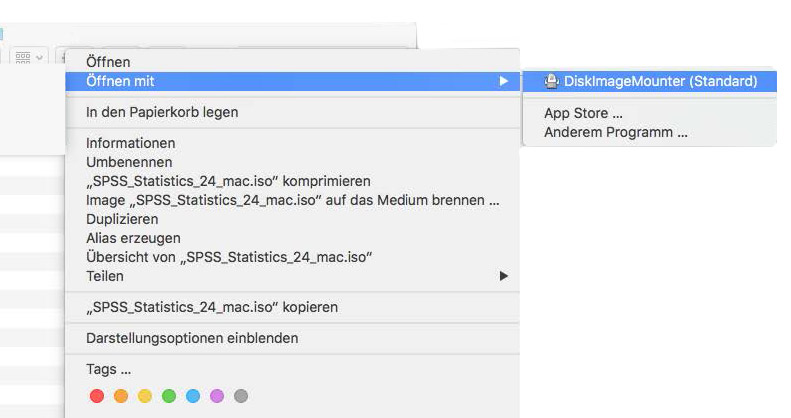
Öffnen Sie das DiskImage mit Rechtsklick -> “Öffnen mit” -> “DiskImageMounter”.
Nun erscheint es auf der linken Seite des Finders unter “Geräte” als “SPSSStatistics”. Öffnen Sie es und den darin verpackten Installer.
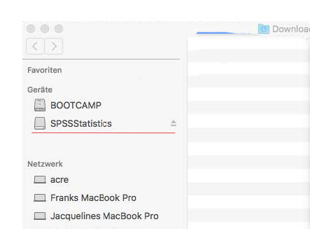
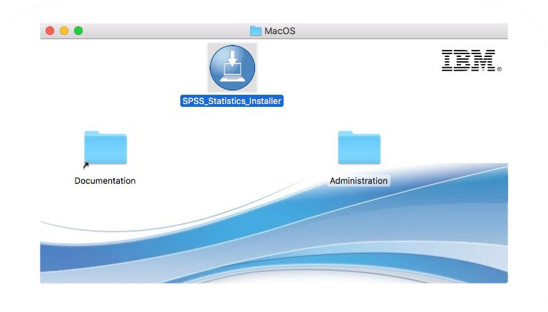
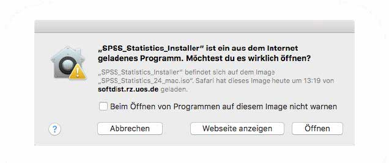
Bestätigen Sie, dass Sie das Programm öffnen möchten und starten Sie die Installation.
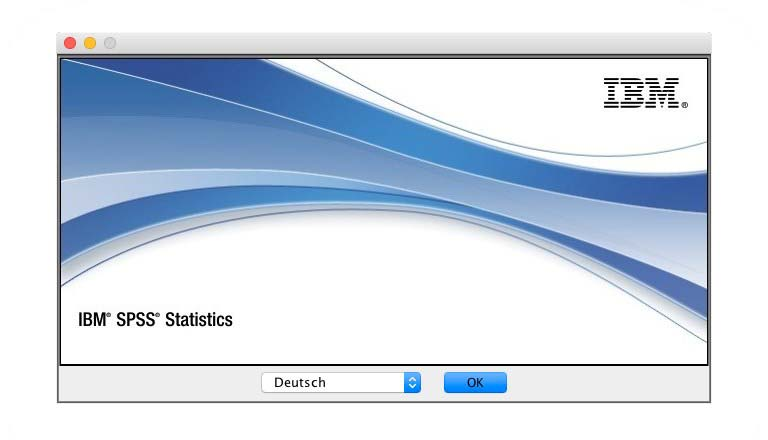
7.1.2 Windows
Das Setup liegt in einer ISO-Datei verpackt. Diese befindet sich in Owncloud unter der Adresse: 0_Institut\3_EDV\spss-statistics-25.0-win-ml.
Mit Rechtsklick -> “Bereitstellen” wird die ISO-Datei eingehängt und wird nun unter “Dieser PC” als DVD angezeigt. Öffnen Sie darin den Ordner Windows und starten Sie das Setup.
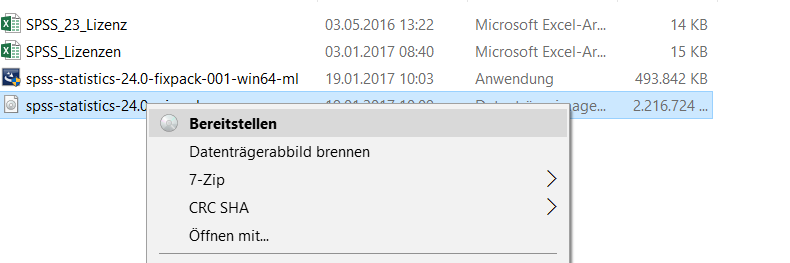
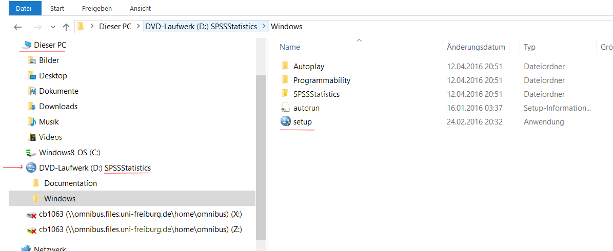
7.2 Lizenzierung
Starten Sie den Lizenzauthorisierungsassistenten.
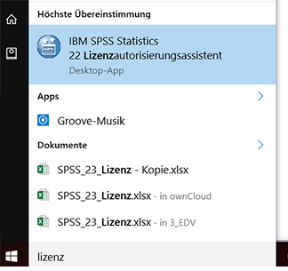 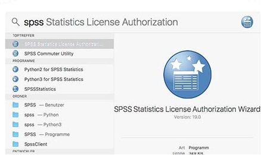
Unter Windows öffnen Sie das Startmenü und suchen nach “SPSS Lizenzauthorisierung”. Unter Mac drücken Sie [⌘+Leertaste] und suchen nach “SPSS Lizenzauthorisierung”. Alternativ finden Sie den Lizenzautorisierungsassistenten auch im Ordner “Anwendungen” -> “SPSS Statistics”.
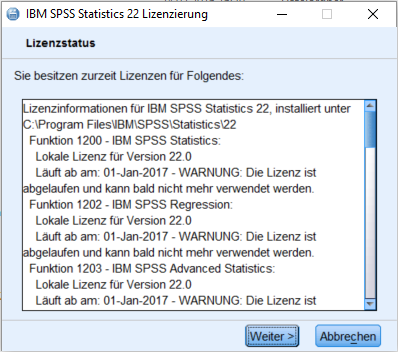
Zunächst erscheint nochmals der Hinweis, die Lizenz sei abgelaufen. Klicken Sie auf Weiter. Wählen Sie “Mein Produkt jetzt lizenzieren”.
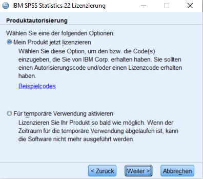
Die Lizenzschlüssel liegen in der OwnClowd unter: ownCloud\0_Institut\4_EDV\SPSS-Lizenzen.xlsx. Suchen und kopieren Sie dort den Lizenschlüssel der jeweiligen SPSS Version zu Ihrem Namen.
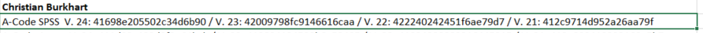
Kopieren Sie Ihren persönlichen Schlüssel in den Assistenten und klicken Sie auf Weiter.
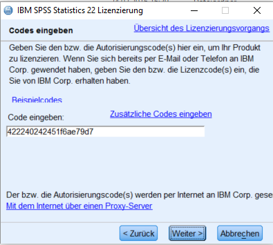
Bei erfolgreicher Lizenzaktivierung sollte ein grüner Text erscheinen:
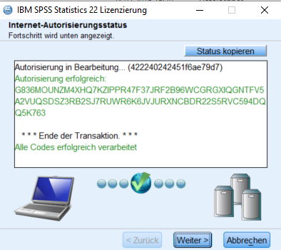
Klicken Sie Weiter und Fertigstellen. Die Lizenz ist aktiviert.